м. Світловодськ, Кіровоградська область
Вічна пам'ять і слава випускникам та учням нашого закладу, які віддали своє життя за свободу, незалежність і територіальну цілісність України.
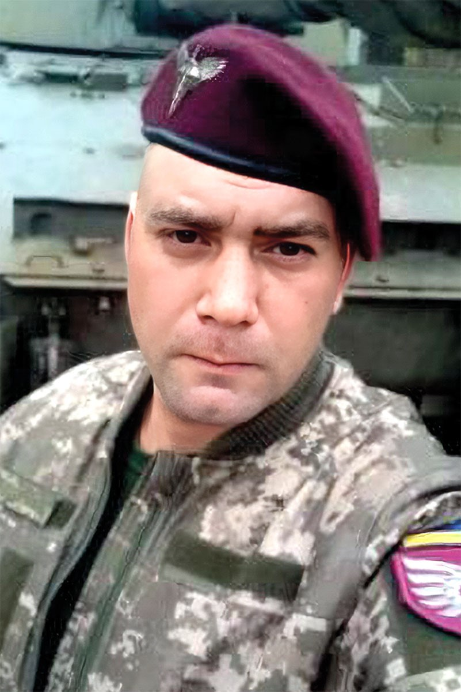
Цвєтков Юрій Геннадійович народився 5 квітня 1988 року в м. Світловодськ, Кіровоградської обл. Закінчив Світловодську гімназію №4, згодом працював на підприємстві. За мирних часів Юрій полюбляв співати, навіть у рідному Світловодську виграв конкурс "Караоке на майдані". Ще до масштабного вторгнення ворога в АТО захоплювався малюванням — робив татуювання побратимам. Це відволікало від важких буднів і виписувало на його обличчі благородство. І там, на фронті, до нього стояли черги побратимів у перервах між обстрілами, щоб зробити татуювання, сюжети яких він придумував сам, підкреслюючи силу й міць воїнства й залишаючи пам’ять про себе на все життя. У 2016 році добровольцем пішов у 28-му окрему механізовану бригаду. Згодом перевівся у 79-ту десантно-штурмову, де познайомився із хмельничанкою Наталею, яка стала його дружиною. Протягом останніх трьох років сім’я Цвєткових проживала в Хмельницькому. З 2021 року вони виконували завдання в районі Станиці Луганської. Шалені обстріли позицій батальйону почалися ще 17 лютого 2022 року. Батальйон змушений був відійти в район Сєвєродонецька, щоб не потрапити в оточення. 6 березня 2022 року в районі Сєвєродонецька Юра з побратимами був на завданні, де потрапили в засідку. Трьох побратимів було поранено. Надавши першу допомогу, дочекавшись бронемашини, Юрій власноруч допоміг хлопцям, завантаживши їх у БТР. Йшла повна зачистка села. Здавалось небезпека позаду та серце Юрія не витримало напруги й болю за товаришів! Пішов до Небесного Легіону… А Наталя продовжує відстоювати свободу України за них двох. Поховали Героя на Алеї Слави на кладовищі в мікрорайоні Ракове у м. Хмельницький.
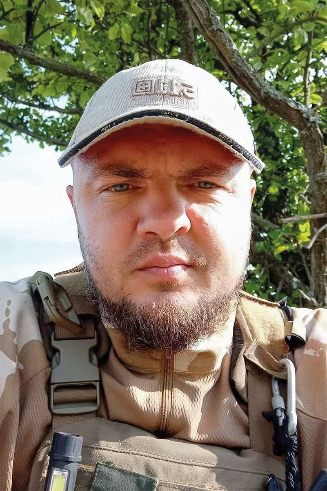
Оранський Євген Григорович народився 17 червня 1986 року в м. Світловодськ, Кіровоградської обл. Після закінчення НВК №4, навчався у Світловодському технікумі радіоелектронного приладобудування, згодом у Кременчуцькому державному політехнічному університеті ім. Михайла Остроградського. Працював 12 років на посаді друкаря офсетного друку в КП "Світловодська міська друкарня". У 2015–2016 роках Євген проходив військову службу в навчальному центрі № 184. Євген Оранський став до лав Збройних сил України в перший день повномасштабного російського вторгнення, щоб захищати незалежність, свободу та територіальну цілісність нашої держави. Служив командиром бойової машини шостої механізованої роти другої механізованої бригади. 14 жовтня 2022 року отримав подяку "За сумлінне виконання бойових завдань, особисту мужність та самовідданість, виявлені в захисті державного суверенітету та територіальної цілісності України, вірність військовій присязі та з нагоди Дня захисників і захисниць України". 18 квітня 2023 року захисник отримав орден "Честь і Слава" і в той же день о 22:00 загинув на Запорізькому напрямку внаслідок атаки російського дрону. 20 жовтня 2023 року наказом Міністерства Оборони України медаллю "За поранення" (посмертно) нагородили Євгена Оранського за отримане важке поранення під час захисту державного суверенітету й територіальної цілісності України. У захисника залишилась кохана дружина Юлія та синочок Святослав.
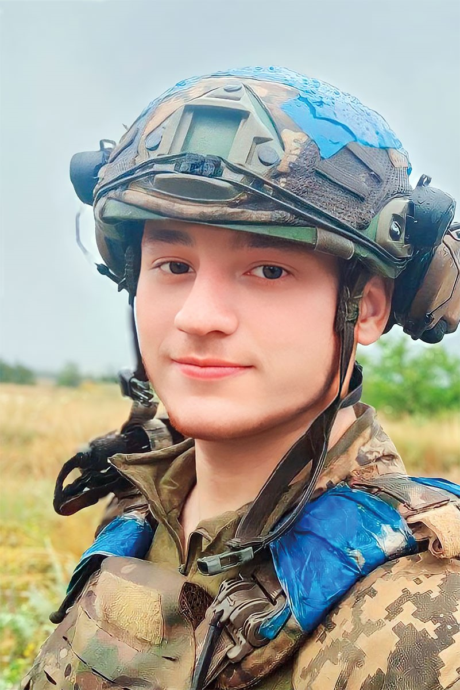
Павло Андрійович Гуранда народився 6 лютого 2001 року у місті Світловодськ. Навчався у Світловодській школі №4, після її закінчення вступив до Національного технічного університету України "Київський політехнічний інститут ім. Ігоря Сікорського" на спеціальність "інженер-електрик". 25 лютого 2022 року Павло разом із братом Олексієм, будучи студентами, добровільно долучились до 241 бригади 207 батальйону ТРО м. Київ. Коли небезпека для столиці минула, брати приймають рішення продовжити захищати Батьківщину у лавах новоствореної 47-ї окремої механізованої бригади "Маґура" бійцями 1 механізованого батальйону 1 механізованої роти, Павло в якості стрільця-гранатометника. 1 вересня 2023 року під час штурмових дій, біля с. Роботине Запоріжської області при підготовці підступів до с. Новопрокопівка Павло Гуранда загинув. Похований Павло Гуранда на Алеї Слави Лісового кладовища, м. Київ.
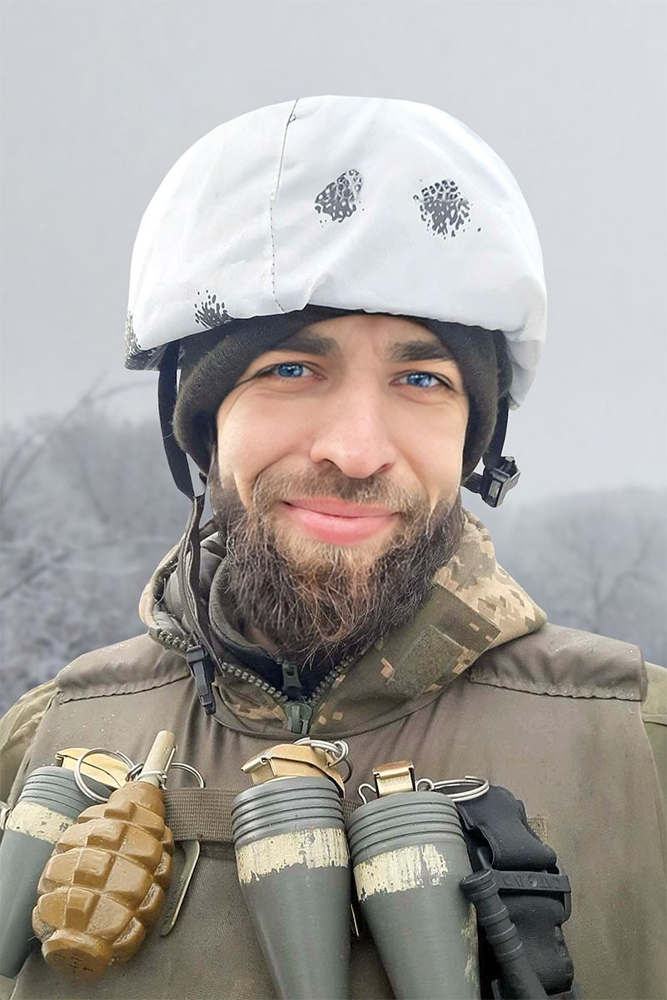
Пілявцев Олександр Олександрович народився 17 вересня 1988 року у м. Світловодську, Кіровоградської обл. Навчався і закінчив Світловодську ЗШ №4. Після школи навчався в Київському інституті. Працював у ресторанному бізнесі. Любив займатися комп’ютерами та спортом. З 4 квітня 2022 року Олександр добровільно вступив до лав Збройних сил України. Декілька місяців служив кухарем, згодом став стрільцем-санітаром. На війні переніс осколкове поранення під час атаки ворожого дрону. Загинув Олександр 16 лютого 2023 року в с. Іванівське Донецької обл. під час виконання бойового завдання. Без найріднішої людини залишилися матір, батько та троє малолітніх дітей.
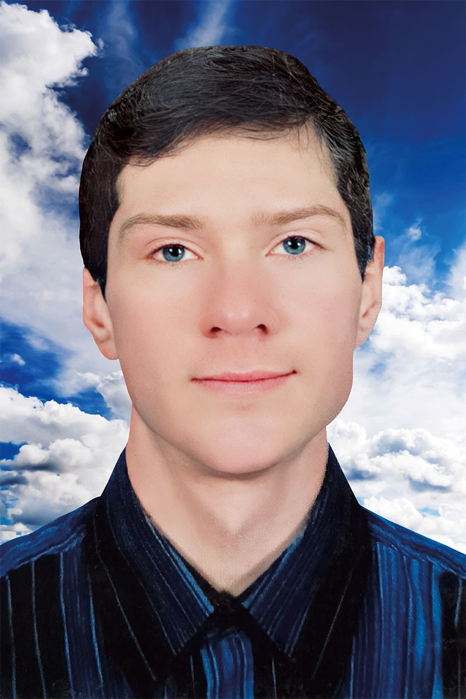
Волощук Віктор Васильович народився 25 вересня 1984 року в м. Світловодськ Кіровоградської області в сім’ї робітників. Отримав повну загальну середню освіту, закінчивши у 2001 році загальноосвітню школу I–III ступенів №4 м. Світловодська. У 2001 році пройшов навчання за спеціальністю "Столяр" на базі ПТУ №5 м. Світловодська. Надалі працював за спеціальністю на меблевій фабриці "Уют" (2002), потім — на меблевій фабриці "Заря" (2002–2004), переведений до СП "Плайтех" (2004), де працював на посадах столяра-станочника, верстатника деревообробних верстатів, укладальника пиломатеріалів, деталей та виробів із деревини. У 2016 році присвоєно 3 розряд верстатника деревообробних верстатів. Працював у СП "Плайтех" до квітня 2022 року та був звільнений із роботи за угодою сторін. 01.12.2022. був мобілізований до лав Збройних Сил України. Проходив 2-місячну підготовку на базі в/ч А2641. Прийняв військову присягу 04.01.2023. Після навчального центру був зарахований 27.01.2023. до складу в/ч А1556 (128 Окрема Гірсько-Штурмова Бригада) на посаді гранатометника стрілецького взводу стрілецької роти стрілецького батальйону[cite: 8]. Загинув у бою під час виконання обов’язків військової служби 16.02.2023. внаслідок артилерійського обстрілу біля м. Бахмут Донецької області. Відданий військовій присязі на вірність українському народу, мужньо виконавши військовий обов’язок у бою за Україну її свободу та незалежність. Похований згідно з власним заповітом на Ревівському цвинтарі, розміщеному в м. Світловодськ. У захисника залишився рідний брат.
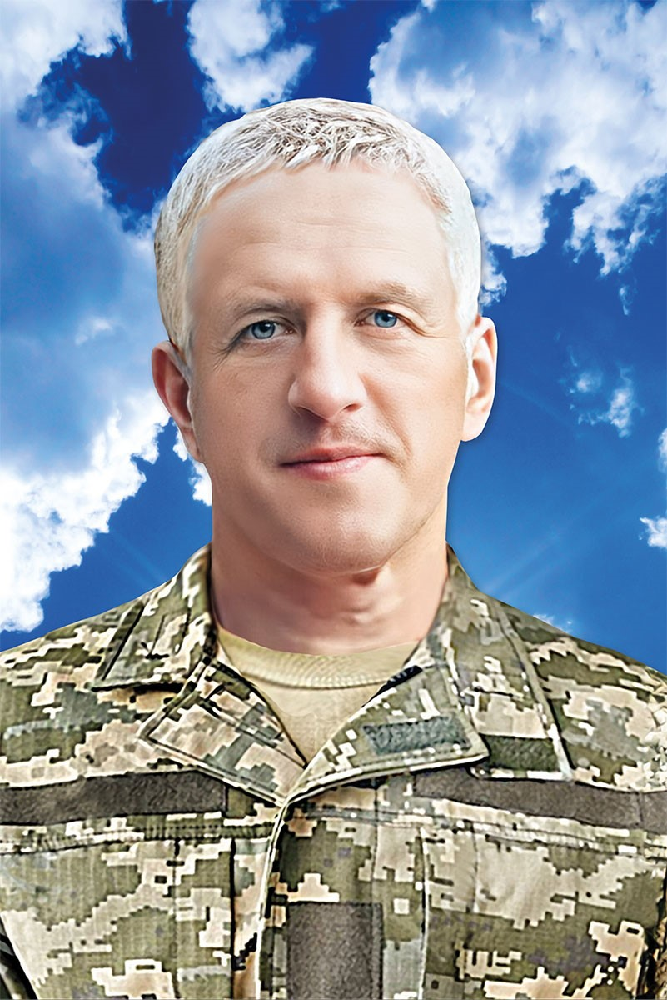
Самко Сергій Миколайович народився 24 вересня 1967 року у м. Світловодську, Кіровоградської обл. Закінчив Світловодську ЗОШ №4, згодом навчався в Дніпропетровському металургійному інституті (Національна металургійна академія України). Усе життя захоплювався різними видами спорту. Займався веслуванням на байдарках і каное в ДСТ "АВАНГАРД" З 1979 року по 1985 рік. Був кандидатом у майстри спорту з веслування на каное. В останні роки був гравцем місцевої аматорської команди з волейболу. Сергій вів підприємницьку діяльність у сфері торгівлі автозапчастинами та приладдям для автотранспортних засобів. Був одружений, виховав дочку та сина. 24 лютого 2022 року Сергій вирішив стати до лав захисників та був переведений до кулеметного взводу стрілецької роти. Загинув 16 серпня 2022 року під час бойового зіткнення із супротивником на позиціях у м. Мар’їнка, Донецької області. 6 серпня 2022 року загиблого поховали на міському кладовищі.
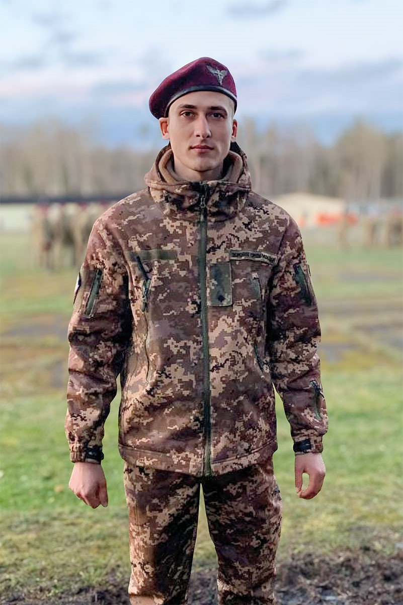
Кудрявцев Владислав Володимирович народився 8 липня 1995 року у селищі Власівка, Світловодської громади. Закінчив Світловодську загальноосвітню школу №4, після чого вступив до коледжу Кременчуцького національного університету імені Михайла Остроградського, де здобув кваліфікацію бакалавра за спеціальністю "Зварювання". Після здобуття освіти працював у ПП "Віктор і К". З 15 грудня 2022 року мобілізований до лав Збройних сил України. Служив в 82-й окремій десантно-штурмовій бригаді. Молодший лейтенант. Командир роти. Загинув захисник 1 січня 2024 року на полі бою під час виконання бойового завдання в районі с. Вербове, Запорізької обл. Попрощалися з Кудрявцевим Владиславом Володимировичем 13 січня 2024 року біля Власівського селищного Будинку культури. Поховали Героя на Власівському кладовищі. У Владислава залишилися батьки, дружина та двоє дітей.
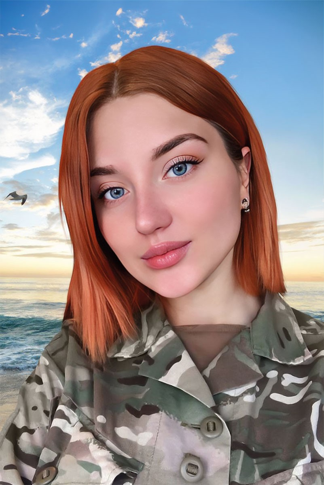
Зубченко Юлія Володимирівна народилась 12 січня 1995 року у м. Світловодську, Кіровоградської обл. Навчалася у Світловодському НВК "Гімназія №4". Після 9 класів місцевої школи навчалася в Кременчуцькому медичному коледжі та отримала спеціальність фельдшер. Здобувши фельдшерський диплом, Юлія поїхала за направленням у село Бакумівка Миргородського району Полтавської області, де працювала на посаді завідувача фельдшерського пункту. Невдовзі вступила в Харківський національний фармацевтичний університет. Навчалася заочно. Вийшла заміж, народила дитину. У 2019 році здобула фах провізора в Національному фармацевтичному університеті в Харкові. У грудні 2020 року підписала контракт із Національною гвардією України й приєдналася до ОЗСП "Азов". На її бронежилеті було написано "Холодний розум, палке серце". Серед побратимів мала позивний "Сирена". Мріяла купити квартиру в Маріуполі й перевезти туди свого сина, щоб він пішов у школу. До великої війни мешкала на базі в Урзуфі. Після повномасштабного вторгнення Юлія була в м. Маріуполі, допомагала пораненим. Хоча мама просила не їхати туди взагалі, а виїхати закордон. Дівчина ображалася і відповідала, що це її вибір, про який вона не шкодує. Вона ніколи не скаржилася ні на що. У кінці березня отримала контузію при евакуації поранених. Їхній "польовий шпиталь" переїхав на "Азовсталь" останнім. «Сирена» не могла кинути своїх підопічних. 8 травня 2022 року загинула на "Азовсталі" внаслідок влучання авіаційної бомби в бункер, де розташовувався шпиталь. За 3 тижні до цього 15 квітня 2022 загинув її коханий Андрій Припишний "Шегі" під час прориву на територію заводу "Азовсталь". У Юлії залишився маленький син Артем, якого виховують батьки. За особисту мужність і самовіддані дії, виявлені в захисті державного суверенітету та територіальної цілісності України, вірність військовій присязі, посмертно нагороджена державною нагородою України орденом "За мужність" III ступеня. 10 березня 2023 Юлію поховали у Світловодську.
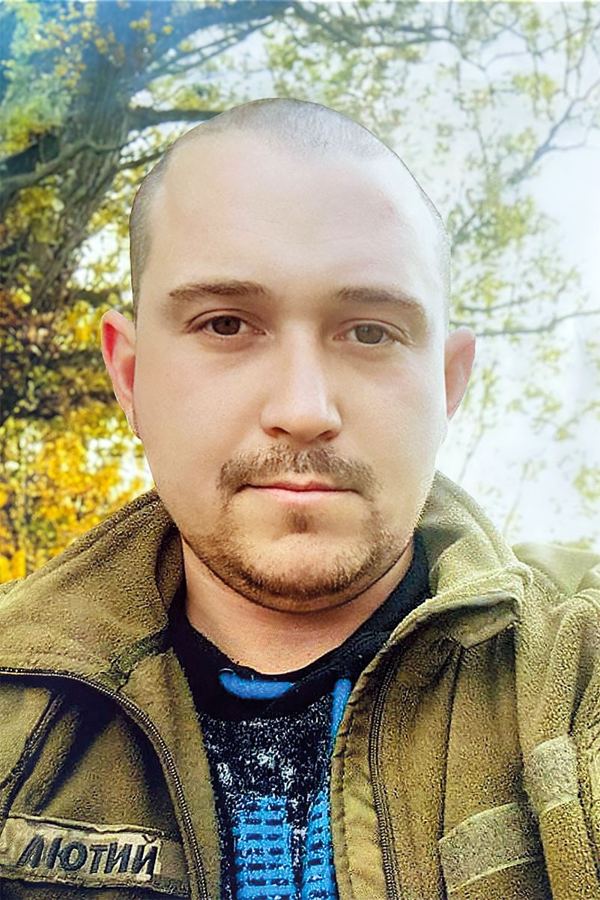
Бугайов Андрій Олександрович народився 27 липня 1992 року у м. Світловодську, Кіровоградської обл. Навчався з 1 по 9 клас у ЗОШ №4, 10–11 клас закінчив у ЗОШ №1 м. Світловодськ. Після закінчення школи вступив до Кременчуцького льотного коледжу (КЛК НАУ), який закінчив за спеціальністю "ПММ". Під час навчання брав участь у студентських спортивних змаганнях, у тому числі й в міжнародних, з важкої атлетики (гирьовий спорт), де завжди здобував винагороди. На війну пішов добровольцем 14 березня 2022 року. Служив водієм-заправником автомобільного відділення взводу матеріального забезпечення. З 28 листопада 2022 року по 23 грудня 2022 року брав участь у бойових діях. Загинув під час виконання службових обов’язків 23 грудня 2022 року в Бериславському р-ні, Херсонської обл. Попрощалася громада з Героєм 30 грудня 2022 року на центральній площі м. Світловодськ. Поховали захисника на місцевому кладовищі.
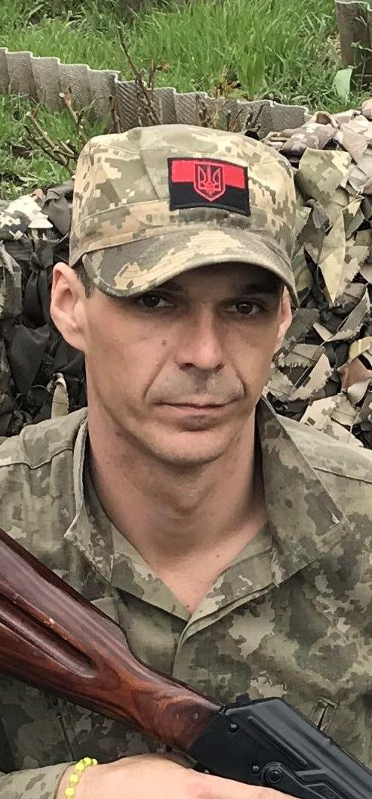
Артеменко Ігор Сергійович народився 25 квітня 1987 року у м. Світловодську, Кіровоградської обл. Навчався з 1 по 9 клас у середній школі №4, після чого вступив до Світловодського технікуму радіоелектронного приладобудування. Після здобуття освіти працював на заводі БМЗ. У 2016 році переїхав до міста Одеса. З початку повномасштабного вторгнення був добровольцем в Муніципальній варті міста Одеси. Потім добровільно пішов на фронт з березня 2023 р. Служив у військовій частині А1736, 57 бригаді. Солдат, гранатометник 2 розрахунку 2 протитанкового відділення протитанкового взводу роти вогневої підтримки. Серед побратимів мав позивний «Лимон». Отримав поранення під час виконання бойового завдання при здійсненні штурмових дій на позиції противника в районі Берхівського водосховища, Донецької області. 04 вересня 2023 року його серце зупинилося в лікарні міста Львів. Похований у м. Одеса (Алея Героїв на Західному кладовищі).
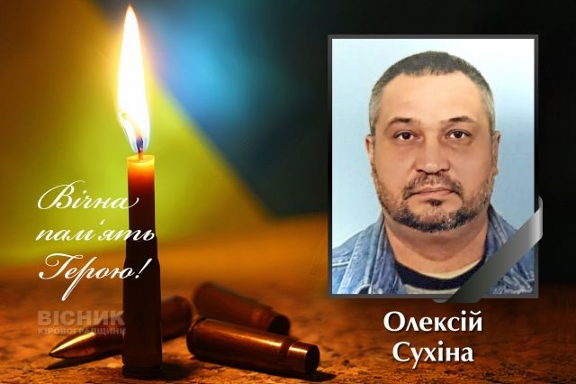
Олексій Сухіна народився 2 травня 1973 року у Світловодську. Закінчив загальноосвітню школу №4, здобув професійну освіту в місцевому професійно-технічному училищі. Працював у будівельній сфері, на приватному підприємстві "Віктор і К". 9 грудня 2024 року Олексій був мобілізований до лав Збройних сил України. Прослуживши менше двох місяців, до останнього виконував свій обов’язок перед Батьківщиною. Його життя обірвалося 4 лютого 2025 року.
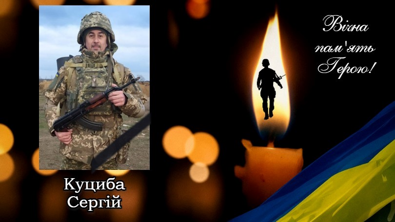
Сергій народився у Світловодську 3 серпня 1974 року. У 1989 році завершив навчання у 9 класі місцевої школи, після чого вступив до Світловодського технікуму, де здобув фах у галузі радіоприладобудування. Професійний шлях Сергія був пов’язаний із зв’язком та промисловістю. Із 1995 по 2004 рік працював в "Укртелекомі", а з 2004 по 2014 рік — на Кременчуцькому сталеливарному заводі. У 2005 році був відзначений нагородою "Кращий за професією". Після 2014 року їздив за кордон на заробітки, та наприкінці 2022 року повернувся до України назавжди. 2 лютого 2024 року Сергій був призваний до лав Збройних Сил України. Служив солдатом — номер обслуги механізованого відділення механізованого взводу 1-ї механізованої роти 1-го механізованого батальйону. З 4 серпня 2024 року, під час виконання бойового завдання, вважався зниклим безвісти. Рідні не втрачали надії й вірили в його повернення… Але після чергової процедури ідентифікації стало відомо: Сергій загинув, виконуючи обов’язок перед Батьківщиною.
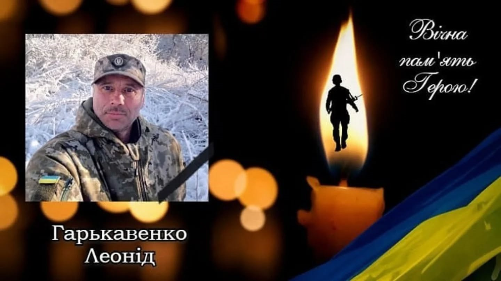
Леонід Юрійович народився 15 грудня 1976 року у місті Світловодськ. У 1992 році закінчив 9 класів 4-ої школи. Після цього вступив до Нікольського училища, де здобув професію слюсаря та машиніста тракториста широкого профілю. Протягом життя працював у своїй громаді: на Світловодському УЕГГ ВАТ ”Кіровоградгаз”, у теплопостачальній компанії ТОВ «Світловодськпобут» як слюсар, а також на Світловодському МАСЛОСИРЗАВОДІ водієм. З дитинства Леонід разом із батьком захоплювався полюванням, а також дуже любив риболовлю — це були його улюблені пори року й моменти спокою. Коли розпочалося широкомасштабне вторгнення, він прагнув стати на захист Батьківщини якнайшвидше. Через стан здоров’я йому відмовляли участі на фронті, але завдяки своєму характеру, рішучості та любові до України, він усе ж пішов до лав Збройних Сил України. Виконував обов’язки водія 2-го мотопіхотного відділення 1-го мотопіхотного взводу 3-ї мотопіхотної роти в складі відповідного мотопіхотного батальйону. Його життя обірвалося 30 вересня 2025 року.
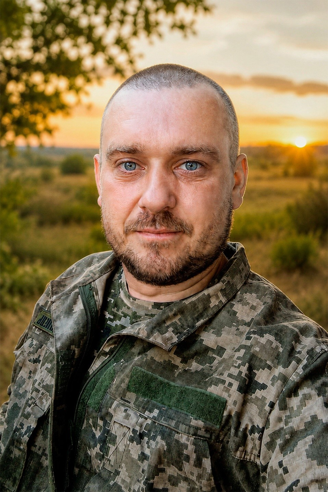
Сергій Клеймахін народився 16 січня 1988 року у Світловодську. Навчався у школі №4, яку закінчив у 2005 році, та у музичній школі, де опанував гру на баяні. Здобув освіту за будівельним напрямом у Київському національному університеті будівництва і архітектури. Близько 20 років його життя було пов'язано з Києвом, де він працював будівельником — виконував електромонтажні, штукатурні та інші роботи. Любив риболовлю та тварин. 2 серпня 2025 року був мобілізований до Збройних сил України. Служив солдатом, водієм-оператором безпілотних авіаційних комплексів розвідувальної роти. 11 грудня 2025 року під час виконання бойового завдання отримав тяжке поранення. Мав статус учасника бойових дій та ветерана війни. 19 червня 2026 року серце Сергія Клеймахіна зупинилося. Йому було 38 років. У Сергія Клеймахіна залишилися донька, син, мама, бабуся та сестра.